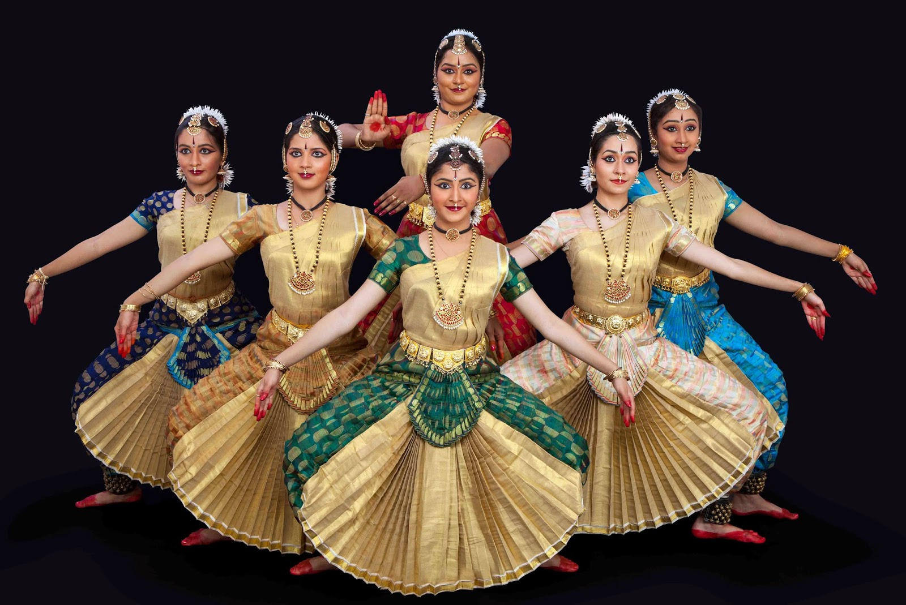
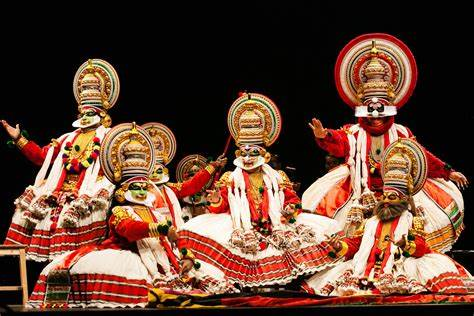
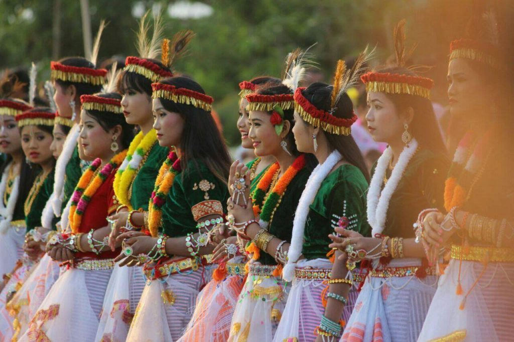
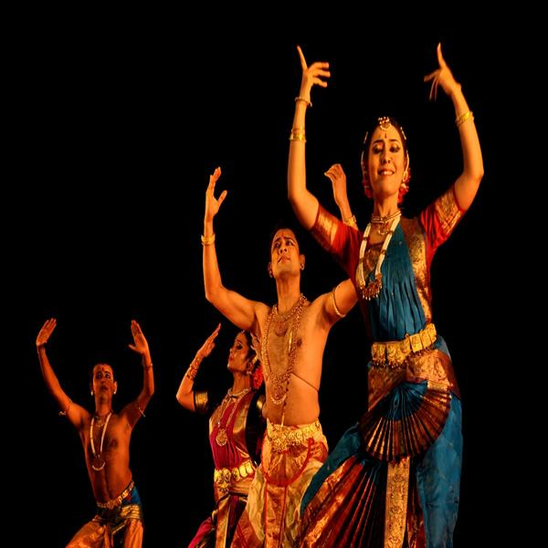

Tamil Nadu

Bharatanatyam, one of the oldest classical dance forms of India, has a rich and storied history.
Its origins can be traced back to the temples of Tamil Nadu,
where it evolved as a sacred art form known as "Dasi Attam" or the dance of the devadasis,
temple dancers who were dedicated to serving the deity through music and dance.
Over centuries, Bharatanatyam underwent transformations, blending elements of spirituality, mythology, and aesthetics.
During the British colonial period, the dance faced suppression, as it was perceived as licentious by Victorian moral standards.
However, in the 20th century, with the efforts of pioneers like Rukmini Devi Arundale, Bharatanatyam experienced a revival and resurgence,
shedding its previous stigma and gaining recognition as a sophisticated classical art form.
Today, Bharatanatyam is celebrated worldwide for its intricate footwork, graceful movements, expressive storytelling,
and adherence to traditional repertoire and techniques.
It continues to evolve, with contemporary choreographers adding innovative elements while preserving its timeless essence.
Kerala

Kathakali, a classical dance form of Kerala, India, is steeped in rich history and cultural significance.
Its origins can be traced back to the 17th century, evolving from ancient ritualistic dances and folk traditions.
Kathakali, which means "story-play" in Malayalam, combines elements of dance, drama, music, and ritual.
It often depicts stories from Hindu epics such as the Ramayana and Mahabharata, as well as other mythological tales.
The elaborate makeup, vibrant costumes, intricate footwork, and expressive gestures characterize Kathakali performances,
which are usually accompanied by traditional music played on instruments like the chenda, maddalam, and edakka. Over the centuries,
Kathakali has flourished as a cherished art form, embodying the cultural heritage and artistic prowess of Kerala,
captivating audiences with its mesmerizing storytelling and timeless beauty.
Manipur

Manipuri dance, also referred to as the Manipuri Raas Leela , is a jagoi and is one of the major Indian classical dance forms,
originating from the state of Manipur.It is one of the greatest cultural achievements of the traditional Vaishnavism adhering Meitei people of Manipur.
Owing to the Meitei civilization,[10] the classical dance form, first formally developed by Meitei Hindu king Ching Thang Khomba (Meitei for 'Rajarshi Bhagyachandra') of the Kingdom of Manipur,
is considered to be the highest spiritual expression of the worship of Hindu deity Krishna.Owing to its huge influences on the diverse cultural heritages across the Indian subcontinent,
it is recognised by the Sangeet Natak Akademi of the Ministry of Culture of the Government of India as one of the few primary classical dance forms of the Republic of India,
and is honoured with the Sangeet Natak Akademi Award for Manipuri annually.It is referred to as the "national dance" during the Armenia-India joint issue of postage stamps,
as a part of the Armenia-India international relations.
Andhra Pradesh

Kuchipudi, a prominent Indian classical dance, is among the ten leading classical dance forms in India. Originating in a Krishna district village in Andhra Pradesh,
it is a dance-drama rooted in the ancient Hindu Sanskrit text, 'Natya Shastra.'' With historical connections to temples and spiritual traditions,
Kuchipudi's origins date back to 10th-century copper inscriptions and 15th-century texts like 'Machupalli Kaifat.
Traditionally attributed to the 17th-century efforts of Tirtha Narayana Yati and his disciple Siddhendra Yogi,''
this dance form's repertoire focuses on Lord Krishna and Vaishnavism, incorporating elements like invocation, dharavu, nritta, and nritya